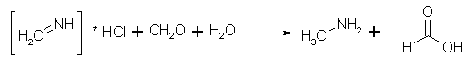

Methylamine Synthesis FAQby Rhodium Chemhack's step-by-step methylamine preparation guide Preparation of a 10% Methylamine solution in methanol Methylamine from catalytic hydrogenation of nitromethane Photo-essay: Methylamine from Ammonium Chloride and Formaldehyde Methylamine Hydrochloride from Acetamide Introduction and Reaction MechanismFigure 1: Hexamethylenetetramine (Hexamine) is hydrolyzed by HCl to ammonium chloride and formaldehyde When HCl is added to a solution of HMTA (Hexamine), it is hydrolyzed to NH4Cl and CH2O. If formalin and ammonium chloride is used directly, instead of HMTA, the solution also contains around 10% methanol as a stabilizer for the formalin, and this reacts with the formaldehyde, creating the acetal methylal, HC(OCH3)2, which has a low boiling point (42-43�C), and will distill off during the heating. As seen below, formic acid is also formed in the reaction, which also reacts with methanol, forming methyl formate, also with a low boiling point.
Figure 2: Ammonium chloride condenses with formaldehyde to form methyleneimine In the acid solution, the formaldehyde and ammonium chloride condenses to the unsaturated compound methyleneimine instead of reverting back to HMTA. The HCl is completely dissociated in the water solution.  Figure 3: Methyleneimine, water and formaldehyde reacts to form methylamine and formic acid The methyleneimine is reduced by the water(!) formed above to give methylamine, while the formaldehyde is oxidized to formic acid, and is partly carried away as its methyl ester. Figure 4: Methylamine hydrochloride condenses with formaldehyde to form dimethylamine If formaldehyde is present in excess, at least some of the methylamine is converted to dimethylamine. If too little formaldehyde is present, the methyleneimine polymerizes to its trimer, (CH2=NH)3. Trimethylamine is never formed, as long as the temperature of the solution never exceeds 110�C. With an excess (4 moles) of formaldehyde, enough water and a reflux temperature of 115�C, dimethylamine is the main product, as the temperature rises, more dimethylamine is formed. Dry heating of paraformaldehyde and ammonium chloride produces trimethylamine through reaction of dimethylamine with formaldehyde, giving rise to tetramethylmethylenediamine and formic acid, and the base further reacts with HCl, giving trimethylamine hydrochloride and methyleneimine hydrochloride. A mixture of HMTA and HCl boils between 105 and 110�C, while NH4Cl/CH2O boils at 115�C. No temperature control is really necessary in the former case, as long as your heating plate isn't too hot. If the reaction is carried out at a lower temperature, less dimethylamine is formed, and the yield is higher. Vacuum reflux and distillation can yield at least 95% yield, in contrast to the 45% gotten at 104�C. Figure 5: A part of the liberated formic acid is oxidized to water and carbon dioxide Most of the formic acid which is formed above, is evolved during the reaction as carbon dioxide during the heating of the solution. This was misinterpreted by Eleusis, who thought the reaction proceeded like HMTA + 4 HCl => 4 MeNH2*HCl + 2 CO2. Here is an excerpt from a letter I got from him, when I told him that the byproduct formed was ammonium chloride:
And when asking for his references:
Unfortunately, Eleusis was wrong here. The reaction between Hexamine and hydrochloric acid is the same as between ammonium chloride and formaldehyde, and also the same as between ammonium chloride and paraformaldehyde. SynthesisMethylamine Hydrochloride from Ammonium Chloride and Formalin [4] In a 5 liter round-bottomed flask, fitted with a stopper holding a condenser set for downward distillation and a thermomether which will extend well into the liquid, are placed 4 kg (3711 ml, 47-53 moles) of technical formaldehyde (35-40 percent; d 1.078 at 20�C) and 2 kg (37 moles) of technical ammonium chloride. The mixture is heated on the steam bath until no more distillate comes over and then over a flame until the temperature of the solution reaches 104�C. The temperature is held at this point until no more distillate comes over (four to six hours). The distillate, which consists of methylal (bp 42-43�C), methylformate and water may be treated with NaOH solution to recover methylal and sodium formate. The contents of the reaction flask are cooled too room temp and the ammonium chloride which separates is filtered off. The mother liquor is concentrated on the steam bath under reduced pressure to 2500 ml, and again cooled to room temp, whereupon a second crop of ammonium chloride separates. The total recovery of ammonium chloride up to this point amounts to 780-815 grams. The mother liquor is again concentrated under reduced pressure until crystals begin to form on the surface of the solution (1400-1500 ml). It is then cooled to room temperature, and a first crop of methylamine hydrochloride, containing some ammonium chloride is obtained by filtering the cold solution. At this point 625-660 grams of crude product is obtained. The mother liquor is now concentrated under reduced pressure to about 1000 ml, and cooled, and a second crop of methylamine hydrochloride (170-190 grams) is then filtered off. This crop of crystals is washed with 250 cc of cold chloroform, and filtered to remove most of the dimethylamine hydrochloride which is present. After the washing, the product weighs 140-150 grams. The original mother liquor is then evaporated under reduced pressure, as far as possible, by heating on a steam bath, and the thick syrupy solution (about 350 ml) which remains is poured into a beaker and allowed to cool, with occasional stirring, in order to prevent the formation of a solid cake, and the crystals obtained are washed with 250 ml of cold chloroform, the solution is filtered yielding 55-65 grams of product. There is no advantage in further concentrating the mother liquor, which contains mostly tetramethylmethylenediamine hydrochloride, but no trimethylamine hydrochloride. The total yield of methylamine hydrochloride is 830-850 grams. The product contains water, ammonium chloride and some dimethylamine hydrochloride. In order to obtain a pure product, the impure methylamine hydrochloride is recrystallized from absolute ethanol (solubility 0.6g/100ml at 15�C), or preferably butyl alcohol (even less soluble). The recovery of ammonium chloride amounts to 100-150 grams, making the total recovery 850-950 grams. The yield of recrystallized methylamine hydrochloride is 600-750 grams (45-51 percent of theory, based on the used up ammonium chloride). A standard run, from 250 grams ammonium chloride and 500g 37% formaldehyde (containing 15% methanol), gives 100-134 grams methylamine hydrochloride, 27 grams dimethylamine hydrochloride and 81 grams of recovered ammonium chloride. The distillate contains methylal (formaldehyde dimethyl acetal) and methyl formate, which after treatment with NaOH can yield 25g of sodium formate and 30 grams of methylal, as the compound cannot be separated by fractional distillation, neutralization is the way to go. Ammonium chloride is very sparingly soluble in a concentrated solution of methylammonium chloride, making the separation of the compounds pretty sharp. Methylamine Hydrochloride from Hexamethylenetetramine (HMTA) 140 grams HMTA (1 mole) was slowly dissolved in 400 ml water and 400ml 37% HCl (4 moles) was added. If the hydrochloric acid is added directly to the HMTA, a lot of it is lost, as ammonium chloride starts to separate almost immediately. The mixture was heated on a temperature controlled heating plate, and the contents was slowly distilled while the temperature slowly rose from 100�C to 109�C during 1-2 hours, during which time a lot of CO2 was evolved, and approx 75ml of formaldehyde-smelling distillate was collected. The solution was concentrated under vacuum until a lot of solids precipitated, which were filtered off, and the solution was further concentrated, filtered etc until everything was crystallized. The last crop of crystals was very hard to crystallize, and care must be taken not to burn the contents of the flask, it must not be allowed to rise over, say 75�C. The white solids were placed in 150ml warm methanol (cheaper than denatured ethanol), and was filtered. The insoluble portion was recrystallized from water, to give 40 grams of pure ammonium chloride, which looked like very large snowflakes. The methanol solution was evaporated, recrystallized from methanol and washed with acetone, to give a deliquescent crystalline mass, which was dried in a desiccator over CaCl2, to give XX grams of methylamine hydrochloride (XX moles) as a fluffy soft powder. Calculated on the two moles of amine nitrogen put into the equation, XX% became methylamine, and 37% (0.75 mole) became ammonium chloride. The net yield of methylamine is therefore XX% of the processed nitrogen. Methylamine Hydrochloride from HMTA, Eleusis' version [with comments by Rhodium] 140g of Hexamine is carefully dissolved in 400mL of Muriatic Acid (31.45% HCl) to which at least 100mL of (preferably) absolute ethanol has been added. Add the hexamine slowly while stirring vigorously and with good ventilation as some nasty fumes are produced. Allow all to stir at room temperature for at least 8 hours but preferably 16. The solution will become turbid within several hours of the initial mixing. I *believe* this is the formation of a formaldehyde trimer of some sort and I suspect that the original equation for the conversion of hexamine into methylamine fragments is therefore incorrect. [There is no trimer of any sort formed, if enough water and formaldehyde is present. Eleusis uses 4 moles of amine to 6 methylenes, which is enough, but gives less yield.] At any rate, filter off this white precipitate which is obviously not an amine salt due to it being fluffy even in Florida's humidity (almost all simple amine salts are hygroscopic) [With the exception of ammonium chloride, and this is it]. Finally, remove the excess water, hydrochloric acid and freako volatile products by, ideally, heating the liquid at low to medium heat in a porcelain saucepan. Stove-proof glass would be ideal, but stainless-steel, aluminum and copper are definitely not! [Rather use a RB flask, with a water aspirator attached, smells considerably less]. The concentration can generally be left unattended for a couple of hours, but try to stick around and babysit it at least the first time so you will have a good idea of how long it takes for your particular stove/pots/etc... [Or else it'll BURN!] Also, the methylamine HCl will form a melt if heated too long at which point it will sublimate off. It will then appear as if it's taking forever for the stuff to concentrate when in fact you are merely boiling your product away. After the concentrated slush has become sufficiently "thick", take it off the heat every so often to see if it doesn't soldify, insuring that the water is mostly gone and that not too much sublimation has occured (some is inevitable and even desireable). The yield of Methylamine HCl should be around 200g as white deliquescent crystals. Note, ACS-grade methylamine HCl is colorless. We aren't using ACS-grade production techniques here, so don't expect ACS-grade product. However, the methylamine produced by this method is eminently suitable for the many purposes normally intended and if allowed to sublimate some when heating, no adjustment for "purity" or "water content" need be made in subsequent uses of it. [I can't understand how he can get 200g of product. 140g hexamine gives 80 grams of NH4Cl, and HOPEFULLY more than 100g of methylamine]. If the crystals are opaque white and do not deliquesce quickly in air of average humidity (65% rh), they may be contaminated with some Hexamine or some bizarre polymer. [Or ammonium chloride. Recrystallize from methanol, then wash with CHCl3]. Washing 100g of the crude product with 100mL of Chloroform by stirring in a beaker then filtering, repeated as many times as necessary, will remove Hexamine. Methylamine HCl is insoluble in Chloroform whereas Hexamine is at the rate of 1g to 10mL. As a final note, I have been informed that hexamine is available in some areas in the form of "fuel tablets" for small camping stoves. I have received mixed results from various individuals using this so, as the saying goes, Caveat Emptor. Methylamine Hydrochloride from HMTA and Paraformaldehyde 70 grams hexamethylenetetramine (0.5 mole) and 30 grams paraformaldehyde (1 mole) was dissolved in 200 ml water and 200ml 37% HCl (2 moles) was added. The mixture was slowly heated, and at approximately 80�C, all paraformaldehyde dissolved. The contents was slowly distilled, and the temperature rose slowly over 1-2 hours to 109�C. During this time, a lot of CO2 was evolved, and approx 75ml of formaldehyde-smelling distillate was collected. The solution was concentrated under vacuum until a lot of solids precipitated, which were filtered off, and the solution was further concentrated, filtered etc until everything was crystallized. The white solids were placed in 150ml warm MeOH, and filtered. The insoluble portion was recrystallized from water, to give 40 grams of ammonium chloride. The methanol solution was evaporated and recrystallized from methanol and washed with acetone, to give a deliquescent crystalline mass, which was dried in a desiccator over CaCl2, to give 49 grams of methylamine hydrochloride (0.72 mole). Calculated on the two moles of amine nitrogen put into the equation, 36% became methylamine, and 37% (0.75 mole) became ammonium chloride. The net yield of methylamine is therefore 58%. Methylamine Hydrochloride from Ammonium Chloride and Paraformaldehyde [1] 27 grams of ammonium chloride, 30 grams of paraformaldehyde (molar ratio 1:2), and 90 ml of water were gradually heated. At 80�C a clear solution was obtained, and the temperature was maintained at 104�C for four hours. Slightly more than one-third (9.06 grams) of the ammonium chloride was recovered, whilst 18.96 grams of pure methylammonium chloride were obtained. This equals 86% of the theoretical amount. The amount of dimethylammonium chloride produced was not estimated. It is not suggested from the results of this experiment that paraformaldehyde can economically be used on a large scale with advantage, since, quite apart from the relatively high cost, neither formic acid nor part of the unchanged aldehyde can be recovered as by-products. Methylamine Hydrochloride from Ammonium Chloride and Formaldehyde Under Vacuum [2] 150 grams of ammonium chloride and 300g of 40% formaline solution were slowly warmed together under vacuum, and soon a rapid evolution of carbon dioxide began. The solution was refluxed at a 20 mm pressure for four hours, until no more carbon dioxide was given off, as tested with barium hydroxide solution. The reaction product was then distilled in a vacuum, 2 hours being consumed in the distillation. As soon as the residue from the distillation was cold, the ammonium chloride which had crystallized out was filtered off with suction, and the filtrate further concentrated by evaporation and again cooled, allowing further ammonium chloride to crystallize. As Werner has pointed out [1], the separation of ammonium chloride and methylammonium chloride is pretty sharp, and the crystals are so different that it is easy to see if one is contaminated with the other. The collected ammonium chloride wighed 7.9 grams (0.17 mol). The mother liquor left was evaporated until crystals began to form on the surface, and was set aside to cool, and the first crop of methylammonium chloride was collected with suction. Further evaporation gave additional crops. In all four crops that were obtained, which were freed from dimethylamine hydrochloride by washing with chloroform, 27.2 grams of dimethylamine hydrochloride (0.51 mol)was obtained. The distillate weighed 37.3 grams, the residue which didn't crystallize weighed 326 grams, and the total yield of methylamine hydrochloride was 82.5 grams, or 37% of theory. References[1] E. A. Werner, Methylation by Means of Formaldehyde. Part I., J. Chem. Soc., pp844-853 (1917)[2] H. I. Jones, The Preparation of Methylamine, J. Am. Chem. Soc.(?), pp1411-1515 (1918) [3] A. I. Vogel, Practical Organic Chemistry, pp414-416, 3rd Ed (1956) [4] C. S. Marvel, Methylamine HydrochlorideOrganic Syntheses Coll. Vol. I, pp347-350, 2nd Ed (1958) [5] Blazevic, Hexamethylenetetramine, a Versatile Reagent in Organic Synthesis, Synthesis, pp161-176 (1979) [6] Brochet and Cambier, Preparation of Methylamine (French), Bull. Soc. Chim. 13, III, 392 (1895) |